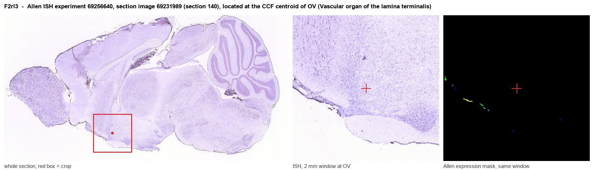
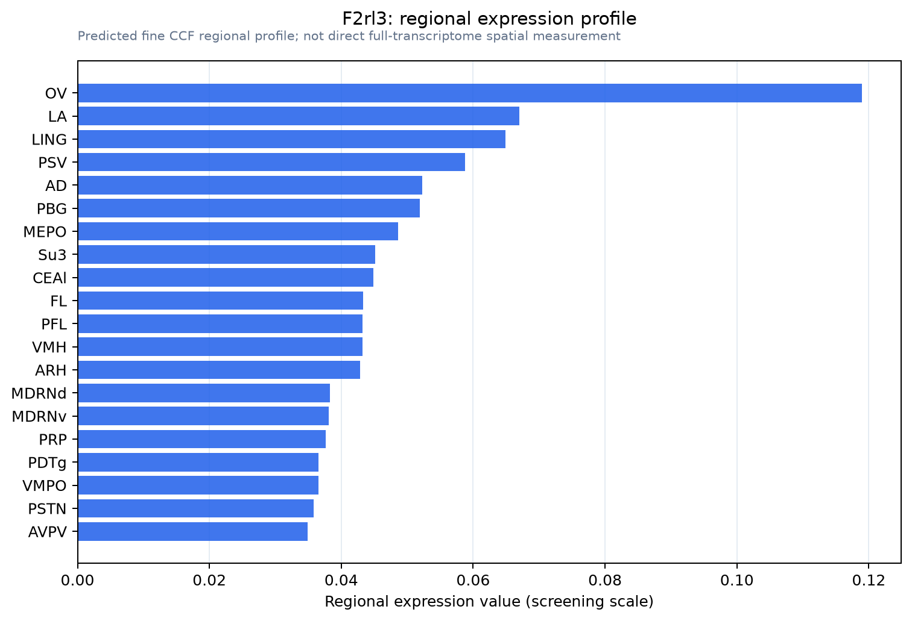

F2rl3
Proteinase-activated receptor 4 (PAR-4) (Coagulation factor II receptor-like 3) (Thrombin receptor-like 3)
Spatial tier: RESTRICTED · Class: GPCR · Top region: OV (Vascular organ of the lamina terminalis) · Positive regions: 13/554
Function in OV: evidence, prediction, innovation
- Gene function
- F2rl3 encodes PAR-4, a protease-activated GPCR cleaved by thrombin, trypsin and cathepsin G; cleavage exposes a tethered ligand that activates Gq and G12/13, raising intracellular calcium and Rho signalling. It is the low-affinity thrombin receptor of platelets and is also reported on neurons and glia.
- Region function
- The OVLT is a circumventricular organ of the lamina terminalis lacking a complete blood-brain barrier; its osmosensitive neurons detect plasma osmolality and circulating signals and drive thirst, vasopressin release and fluid-electrolyte homeostasis.
- Published in this region
- inferred No region-specific literature found. The closest evidence is that PAR-4 is expressed by CNS neurons elsewhere: Henrich-Noack et al. 2010 localised PAR-4 to hippocampal granule and pyramidal neurons and, uniquely, to CA4 mossy fibre axons, with redistribution after global ischaemia. Pool et al. 2020 catalogued OVLT excitatory and inhibitory neuron types by single-cell RNA-seq without highlighting F2rl3.
- Predicted function
- Prediction: because the OVLT lies outside the blood-brain barrier, PAR-4 there is well placed to act as a humoral sensor coupling circulating thrombin and inflammatory proteases to Gq-driven depolarisation of osmosensitive neurons. Local activation with AYPGKF-NH2 should excite OVLT neurons and evoke drinking or vasopressin release, whereas BMS-986120 antagonism or F2rl3 deletion should blunt dipsogenic responses to inflammatory or hypovolaemic challenge more than to pure osmotic stimuli.
- Innovation
- ★★★★★ 5/5 A plasma-protease sensor in the one forebrain region deliberately exposed to blood is an obvious hypothesis nobody has tested.
- Tools
- PAR-4 activating peptide AYPGKF-NH2 and clinical-grade antagonists BMS-986120 and BMS-986141; F2rl3-null (PAR-4 deficient) mice standard in platelet biology; OVLT neurons targetable with Nos1-Cre or Slc17a6-Cre plus Cre-dependent AAV and photometry readout as in Pool et al. 2020.
- References
Direct evidence located at the region

Allen ISH experiment 69256640, section image 69231989 (section 140): the section that contains the CCF centroid of Vascular organ of the lamina terminalis according to the Allen image-to-atlas alignment (reference_to_image), with a 2 mm window around that point. Left: whole section, red box = window. Middle: ISH signal. Right: Allen's expression-mask view of the same window. open this image in the Allen viewer
Direct spatial evidence

Regional expression figure

Predicted WMB × fine-CCF profile; not direct full-transcriptome spatial measurement.
Spatial profile
Evidence and specificity
- Evidence status
- PREDICTED_FINE
- Direct sources
- None; predicted localization only
- Exclusive threshold
- 12 positive regions out of 554
- Spatial specificity
- 0.319
- Top-region fraction
- 0.088
- Filter status
- PASS
Interpretation limits
- Cell-type-to-region projection is imputed expression, not direct spatial measurement.
- Adult reference atlases do not establish stability across age, sex, strain, state, or disease.
- Transcript abundance does not guarantee protein abundance or genetic-tool performance.